Festivals of India
Discover the rich traditions and colorful celebrations that bring people together across India. Each festival represents culture, faith, and joy shared by millions.
Diwali
Festival of Lights
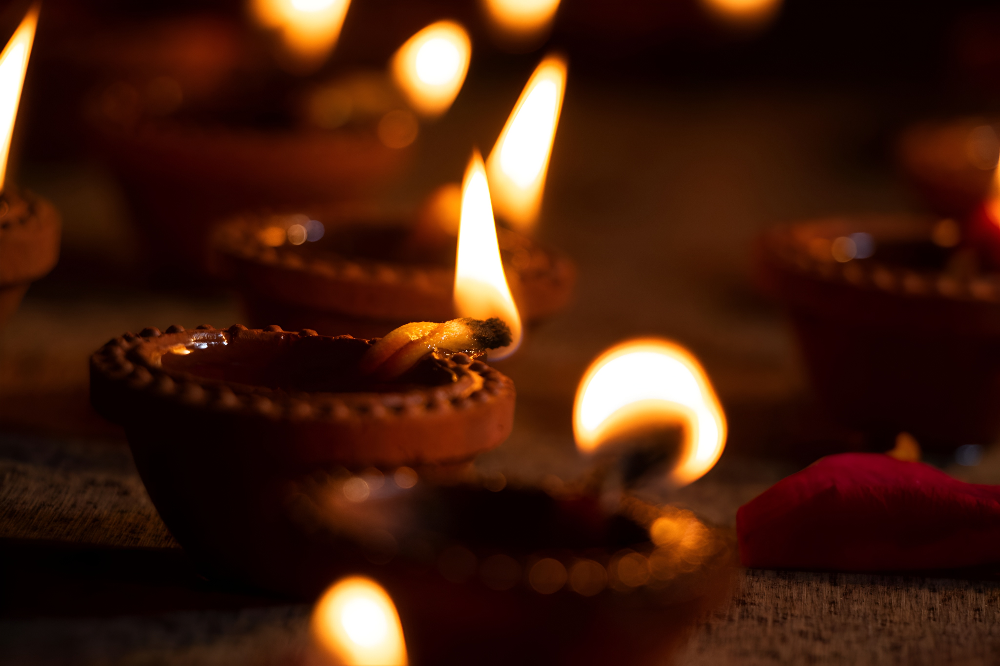
About Diwali
Diwali, widely known as the Festival of Lights, is one of the most celebrated festivals in India. It symboilzes the triumph of light over darkness, knowledge over ignorance, and good over evil. The festival is observed by millions of people across the country and around the world.
Diwali has deep mythological roots. In hindu tradition, it marks the return of Lord Rama to Ayodhya after defeating Ravana. In other regions, it is associated with the worship of Goddess Lakshmi, the deity of wealth and prosperity. Though the stories may differ, the message remains universal hope always overcome despair.
When it is celebrated:
Diwali is celebrated in October or November according to the Hindu lunar calendar,
on the new moon night (Amavasya) of Kartika month.
Mythological Background
Diwali is most commonly associated with the return of Lord Rama to Ayodhya after fourteen years of exile and his victory over the demon king Ravana. The people of Ayodhya welcomed him by lighting rows of oil lamps (diyas), symbolizing the triumph of good over evil and light over darkness.
In many regions, Diwali is also linked to the worship of Goddess Lakshmi, who represents wealth and prosperity. It is believed that on this night, she blesses homes that are clean, bright, and filled with devotion.
In parts of South India, the festival commemorates Lord Krishna’s victory over the demon Narakasura, symbolizing the destruction of evil forces.
How it is Celebrated
During Diwali, homes are cleaned and decorated with colorful rangoli patterns and oil lamps known as diyas. Families gather to perform Lakshmi puja, exchange sweets and gifts, and enjoy festive meals together.
At night, fireworks illuminate the sky, creating a vibrant and joyful atmosphere. Markets are filled with lights, decorations, and traditional sweets, adding to the festive spirit.
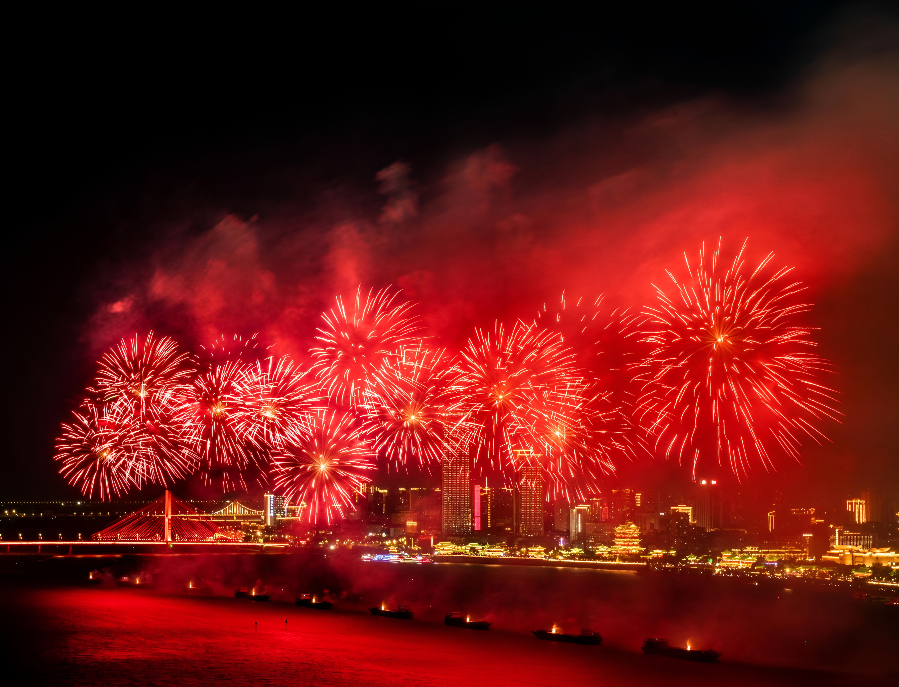
Cultural Significance
Beyond its religious importance, Diwali represents renewal and togetherness. It is time for forgiveness, gratitude, and strengthing bonds with family and community. The festival encourages people to let go of negativity and welcome positivity into their lives.
Diwali is not just a celebration, it is a reminder that even the smallest light can dispel darkness
Holi
Festival of Colors, Joy, and Renewal
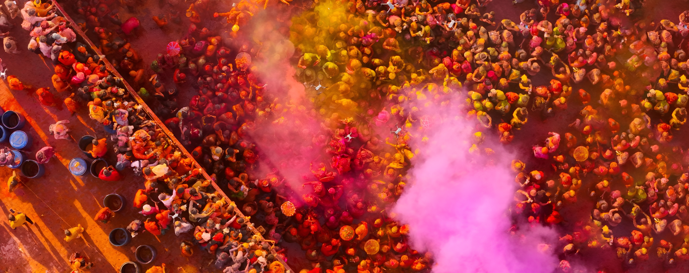
About Holi
Holi, popularly known as the Festival of Colors, is one of the most vibrant and joyous celebrations in India. It marks the arrival of spring and symbolizes the triumph of good over evil. The festival is deeply rooted in Hindu mythology and is associated with the story of Prahlad and Holika, representing the victory of devotion and righteousness.
Holi is not just a religious observance but also a social celebration that brings people together. It transcends barriers of caste, class, and age, encouraging harmony and togetherness across communities.
When it is celebrated:
Holi is celebrated in March during the full moon day (Purnima) of the Phalguna month.
Mythological Background
The festival commemorates the legend of Prahlad, a devotee of Lord Vishnu, who was protected from the evil intentions of King Hiranyakashipu and his sister Holika. The burning of Holika symbolizes the destruction of evil forces and the protection of faith.
The night before Holi is marked by Holika Dahan, where bonfires are lit to signify purification and the burning away of negativity.
How It Is Celebrated
On the main day of Holi, people gather in open spaces to play with colored powders (gulal) and water. Music, dance, and festive sweets like gujiya and thandai add to the excitement.
Children and adults alike participate enthusiastically, smearing colors on each other’s faces as a gesture of love and friendship. Streets become filled with laughter, music, and vibrant hues.

Cultural Significance
Children and adults alike participate enthusiastically, smearing colors on each other’s faces as a gesture of love and friendship. Streets become filled with laughter, music, and vibrant hues.
Beyond its religious origins, Holi has evolved into a global celebration, admired for its colorful spirit and message of unity.
Pongal
Festival of Harvest and Gratitude
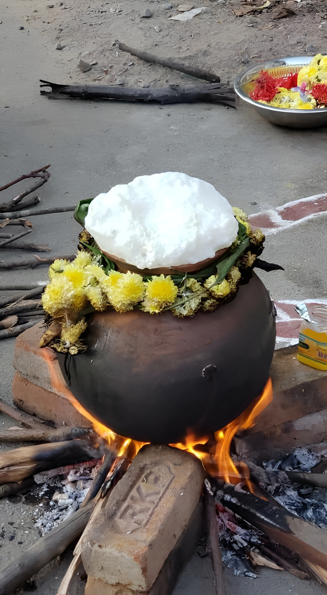
About Pongal
Pongal is a traditional harvest festival celebrated primarily in Tamil Nadu and other parts of South India. It is dedicated to the Sun God (Surya) and expresses gratitude for a successful harvest season. The festival reflects the deep connection between agriculture, nature, and human life.
Pongal usually falls in the month of January and marks the beginning of the Tamil month “Thai,” symbolizing new beginnings and prosperity.
When it is celebrated:
Pongal is celebrated from January 14 to January 17 every year.
Historical and Cultural Background
Pongal has ancient roots dating back to the Sangam period. It is closely tied to farming traditions and rural life. The word “Pongal” means “to overflow,” referring to the boiling over of rice during the special dish preparation — a symbol of abundance and prosperity.
The festival spans four days
- Bhogi Pongal-Cleaning homes and discarding old items.
- Surya Pongal-Main day dedicated to the Sun God.
- Mattu Pongal-Honoring cattle for their role in agriculture.
- Kannum Pongal-Family gatherings and social visits
How it is Celebrated
The highlight of Pongal is the preparation of the special dish called Pongal, made from freshly harvested rice, milk, and jaggery. It is cooked in decorated clay pots as families gather and pray for prosperity.
Homes are decorated with colorful kolam (rangoli) patterns at the entrance. Farmers decorate their cattle with garlands and paint, showing respect and gratitude.
traditional music, dance, and cultural events bring villages and towns alive with festive energy.
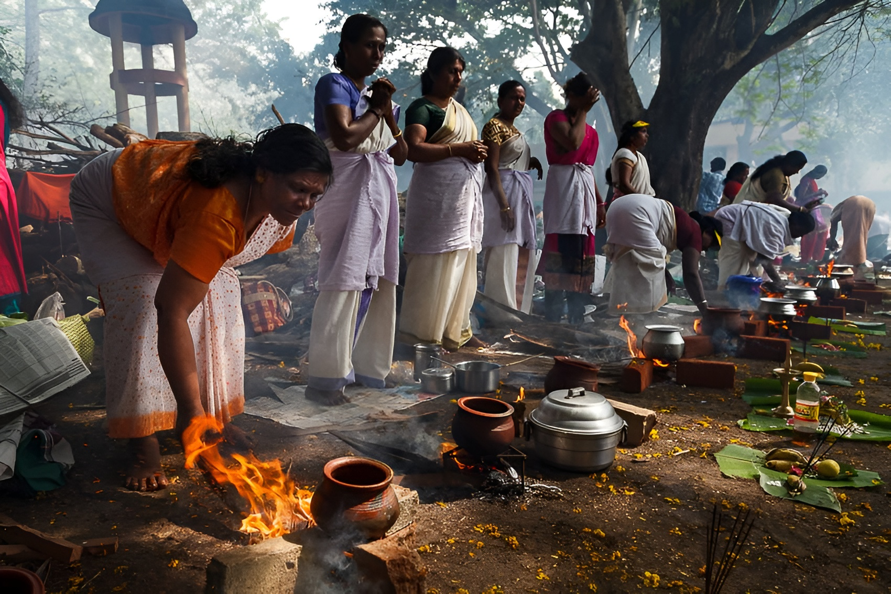
Cultural Significance
Pongal represents gratitude toward nature, the Sun, cattle, and the earth. It reminds people of the importance of agriculture and the hard work of farmers.
The festival promotes harmony between humans and nature, celebrating abundance and collective well-being.
Onam
Festival of Prosperity and Harmony
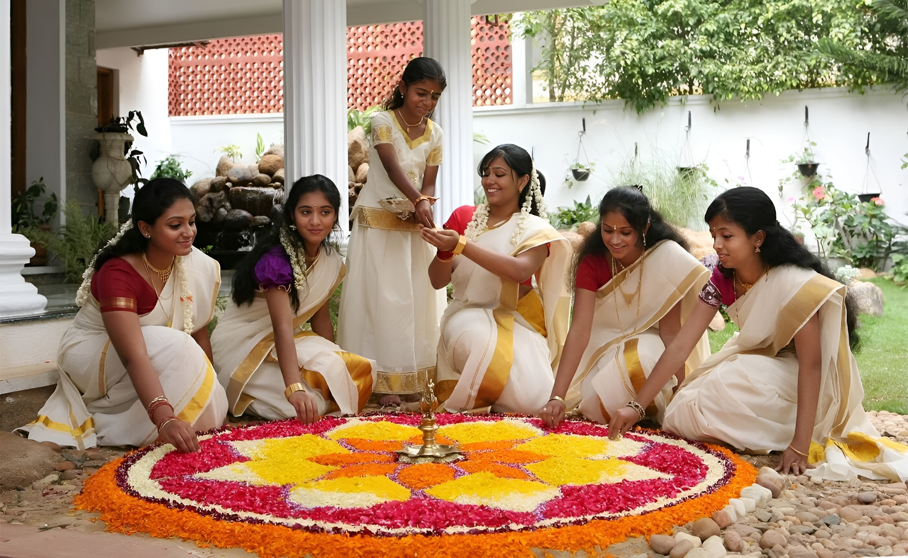
About Onam
Onam is a major harvest festival celebrated in the state of Kerala. It commemorates the annual return of the legendary King Mahabali, whose reign was known as a golden era of peace, prosperity, and equality.
The festival usually falls in the months of August or September and lasts for ten days. Onam is not only a religious celebration but also a cultural event that unites people of all communities in Kerala.
When it is celebrated:
Onam is celebrated in August or September during the Malayalam month of Chingam.
Mythological Background
According to legend, King Mahabali was a generous and beloved ruler. However, his growing power concerned the gods. Lord Vishnu, in the form of Vamana (a dwarf Brahmin), requested three steps of land from Mahabali. With two steps, Vamana covered the earth and sky, and for the third step, Mahabali offered his own head.
Impressed by his devotion and humility, Lord Vishnu granted him permission to visit his people once every year. Onam celebrates this annual homecoming of King Mahabali.
How it is Celebrated
Onam is celebrated with great enthusiasm and vibrant traditions
- Homes are decorated with pookalam (intricate floral rangoli designs).
- Families prepare a grand feast known as Onam Sadya, served on banana leaves.
- Traditional boat races (Vallam Kali) are organized.
- Cultural performances like Kathakali and Pulikali take place.
People wear traditional attire and gather with friends and family to celebrate together.
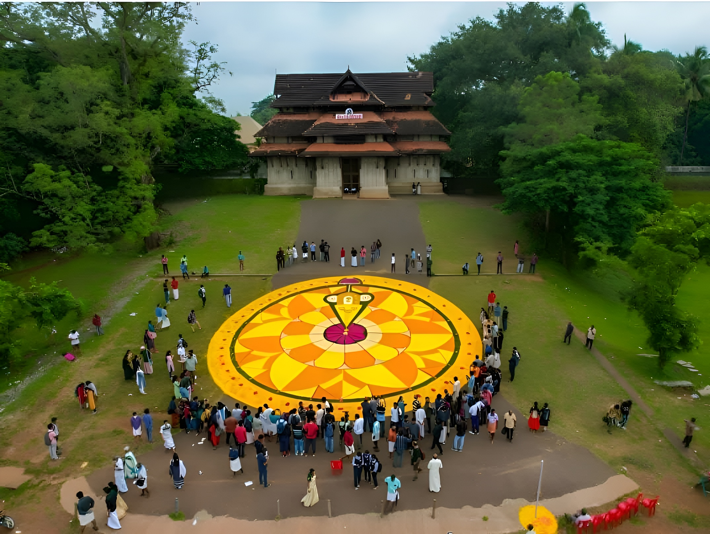
Cultural Significance
Onam symbolizes unity, prosperity, and cultural pride. It reflects Kerala’s rich traditions and communal harmony.
The festival teaches values of humility, generosity, and equality, inspired by the character of King Mahabali.
Onam is not just a celebration of harvest — it is a celebration of shared identity and joy.
Ganesh Chaturthi
Festival of Devotion and New Beginnings

About Ganesh Chaturthi
Ganesh Chaturthi is a widely celebrated Hindu festival that marks the birth of Lord Ganesha, the remover of obstacles and the god of wisdom and prosperity. The festival is especially popular in Maharashtra but is celebrated across India with great devotion.
It usually falls in the month of August or September and lasts for ten days, ending with the grand immersion ceremony known as Ganpati Visarjan.
When it is celebrated:
Ganesh Chaturthi is celebrated in August or September on the fourth day
(Chaturthi) of the Bhadrapada month.
Mythological Background
According to Hindu mythology, Goddess Parvati created Ganesha from sandalwood paste to guard her while she bathed. When Lord Shiva returned and was denied entry, he unknowingly beheaded the child. Realizing his mistake, Shiva revived him by placing the head of an elephant on his body, giving birth to Lord Ganesha.
Because of this, Ganesha is worshipped first before beginning any new venture, symbolizing wisdom and removal of obstacles.
How It Is Celebrated
The festival begins with the installation of beautifully crafted idols of Lord Ganesha in homes and public pandals. Devotees offer prayers, chant hymns, and perform aarti daily.
Homes are decorated, and sweets like modak — believed to be Ganesha’s favorite — are prepared.
On the final day, grand processions take place, and idols are immersed in water bodies with chants of “Ganpati Bappa Morya,” symbolizing farewell and the promise of return next year.
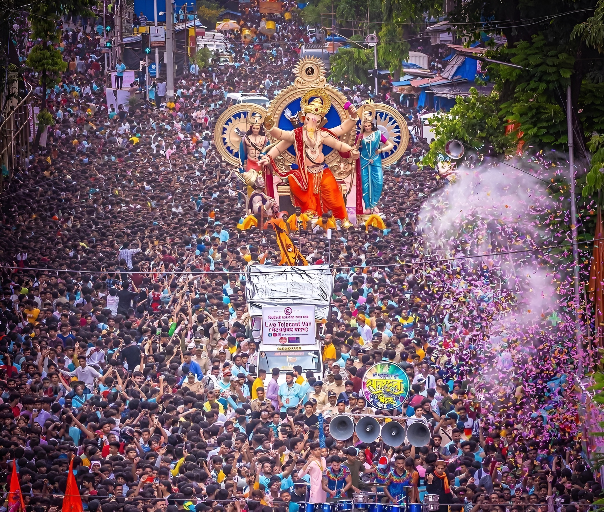
Cultural Significance
Ganesh Chaturthi promotes unity and community bonding. Public celebrations bring people together beyond social differences.
The festival teaches values of wisdom, humility, devotion, and the importance of new beginnings.
It is not just a celebration of a deity — it is a celebration of faith and collective joy.
Eid-ul-Fitr
Festival of Gratitude and Compassion
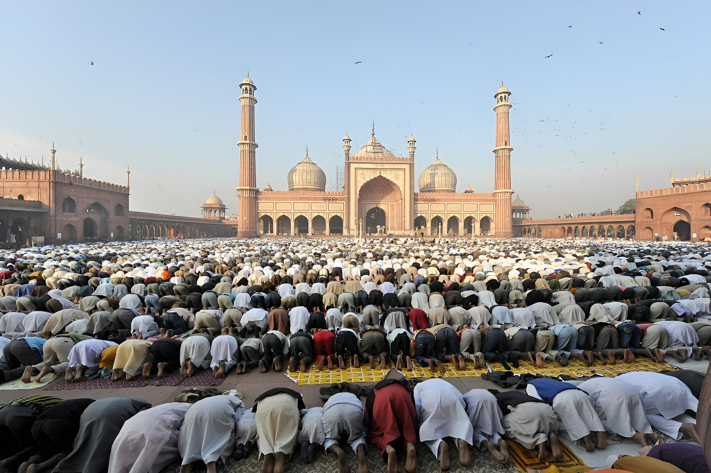
About Eid-ul-Fitr
Eid-ul-Fitr is one of the most important festivals in Islam. It marks the end of Ramadan, the holy month of fasting, prayer, and spiritual reflection. The festival is celebrated by Muslims around the world with joy and gratitude.
Eid begins with the sighting of the new moon and symbolizes renewal, self-discipline, and devotion.
When it is celebrated:
Eid-ul-Fitr is celebrated after the sighting of the new moon
marking the end of Ramadan.
Spiritual Background
During Ramadan, Muslims fast from dawn to sunset, practicing self-control and empathy for those in need. It is a time of prayer, charity, and strengthening faith.
Eid-ul-Fitr celebrates the successful completion of this sacred month. It is a day of thanksgiving to Allah for providing strength and guidance.
How It Is Celebrated
The day begins with a special prayer known as Eid Salah, offered in mosques or large open grounds. Before the prayer, Muslims give Zakat al-Fitr, a form of charity to help the less fortunate.
Families wear new clothes, visit relatives, and greet each other with “Eid Mubarak.” Special dishes and sweets like Sheer Khurma are prepared and shared.
The atmosphere is filled with joy, generosity, and unity.
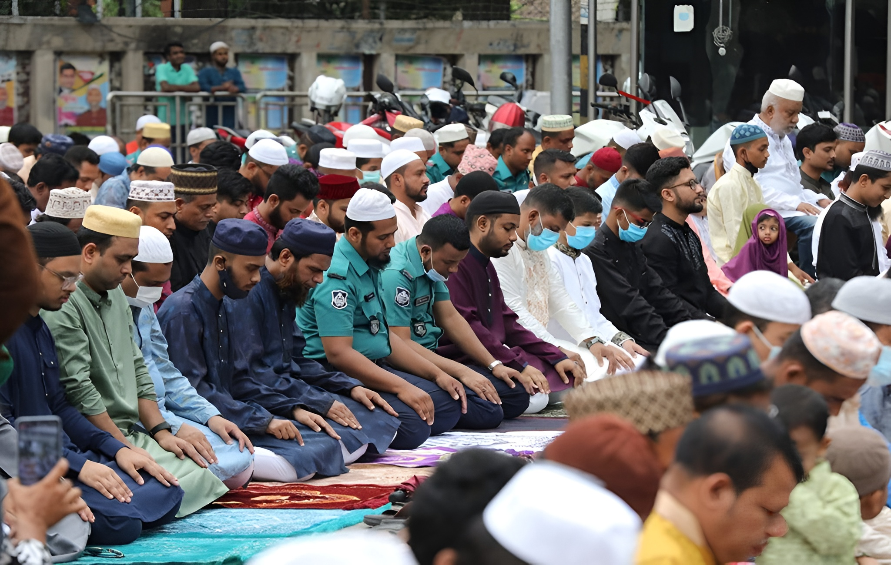
Cultural Significance
Eid emphasizes compassion, equality, and community bonding. It encourages forgiveness, gratitude, and generosity.
The festival reminds people of the importance of caring for others and strengthening relationships within society.
Eid-ul-Fitr is not only a religious celebration — it is a celebration of humanity and kindness.
Christmas
Festival of Joy, Peace, and Giving

About Christmas
Christmas is a widely celebrated festival that commemorates the birth of Jesus Christ. Observed on December 25th, it is one of the most significant festivals in Christianity and is celebrated around the world, including in many parts of India.
Beyond its religious meaning, Christmas has become a global celebration of joy, love, and goodwill.
When it is celebrated:
Christmas is celebrated every year on December 25.
Historical and Spiritual Background
According to Christian belief, Jesus Christ was born in Bethlehem to bring hope, peace, and salvation to humanity. His birth is seen as a symbol of divine love and compassion.
Christmas celebrates this message of kindness, forgiveness, and generosity, encouraging people to spread goodwill toward others.
How It Is Celebrated
Homes and churches are decorated with lights, stars, and Christmas trees. People attend midnight Mass, sing carols, and exchange gifts with family and friends.
Children eagerly await the arrival of Santa Claus, who symbolizes the spirit of giving. Special dishes and cakes are prepared, and families gather to celebrate together.
In India, Christmas is celebrated with cultural diversity, blending local traditions with Christian customs.
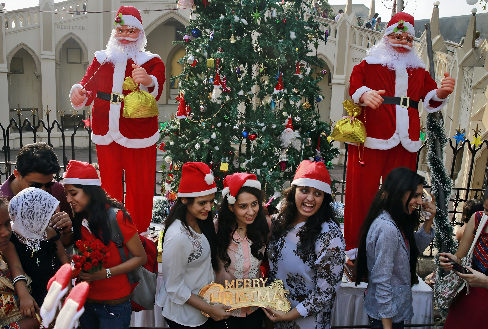
Cultural Significance
Christmas promotes values of love, peace, and unity. It is a time to strengthen family bonds and extend kindness to those in need.
The festival encourages people to reflect on compassion, gratitude, and the importance of sharing happiness.
Christmas is not only a religious celebration — it is a celebration of hope and harmony.
Navratri
Festival of Devotion and Divine Energy
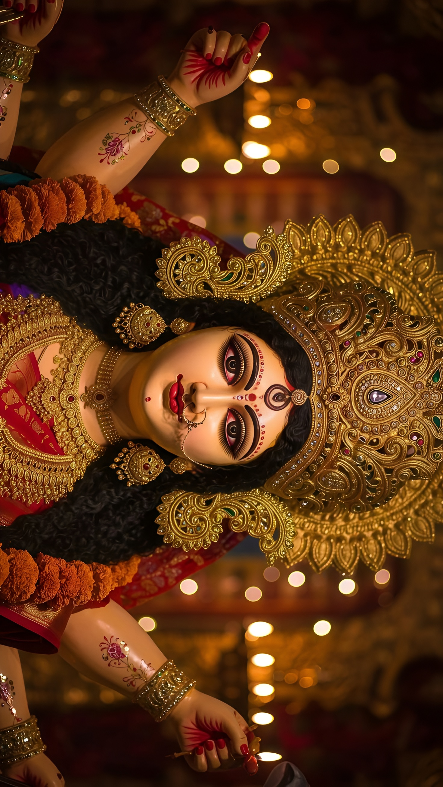
About Navratri
Navratri is a major Hindu festival dedicated to Goddess Durga and her nine divine forms. The word “Navratri” means “nine nights,” and the festival is celebrated over nine days and nights, usually in September or October.
It symbolizes the victory of good over evil and the power of the divine feminine (Shakti).
When it is celebrated:
Navratri is celebrated in September or October for nine nights.
Mythological Background
Navratri commemorates the victory of Goddess Durga over the demon Mahishasura. According to legend, the demon had received a blessing that no man could defeat him. To restore balance, Goddess Durga was created by the combined energies of the gods and ultimately defeated Mahishasura after nine nights of battle.
These nine nights represent the triumph of righteousness and strength.
How It Is Celebrated
Devotees observe fasts, perform prayers, and visit temples dedicated to Goddess Durga. Each day is devoted to a different form of the goddess.
In many regions, especially Gujarat and parts of North India, people celebrate with vibrant Garba and Dandiya Raas dances. Traditional music, colorful attire, and community gatherings create a joyful atmosphere.
The festival concludes with Dussehra, marking the ultimate victory of good over evil.
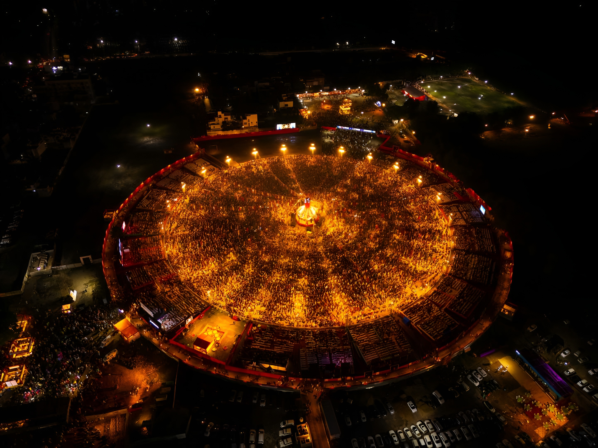
Cultural Significance
Navratri celebrates strength, devotion, and the power of positivity. It emphasizes discipline, faith, and inner spiritual growth.
The festival also highlights the importance of respecting and honoring feminine energy in society.
Navratri is not just a ritual — it is a celebration of courage and divine grace.
Dussehra(Vijayadashami)
Triumph of Good Over Evil
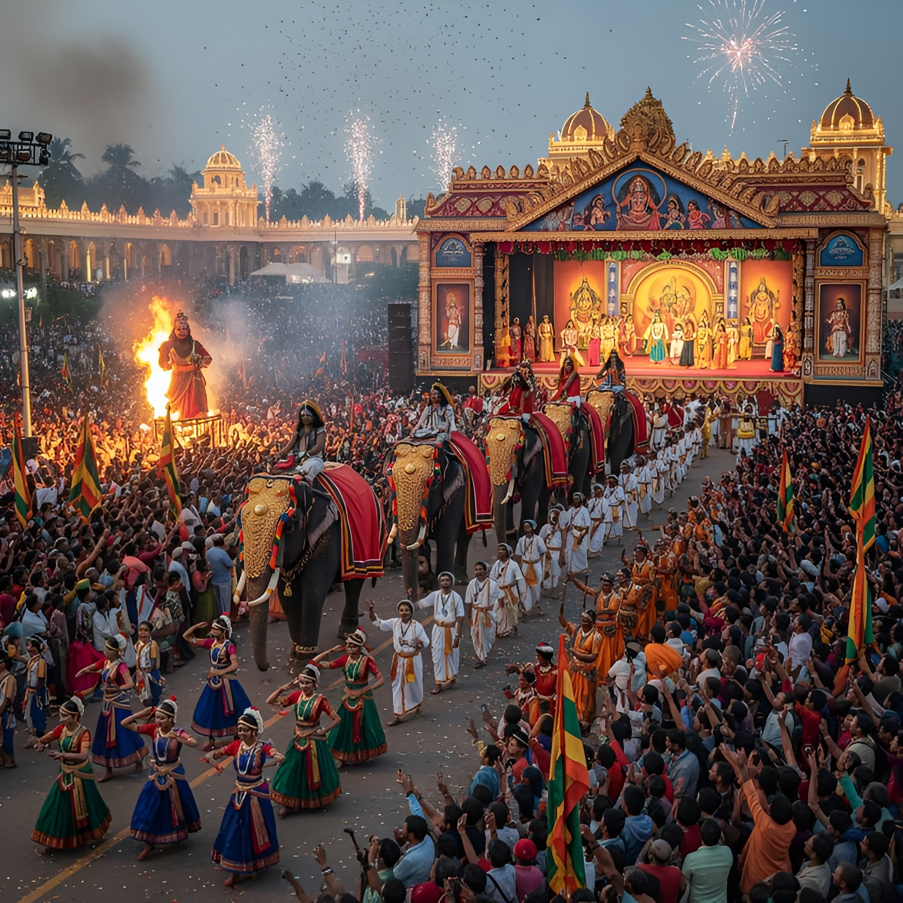
About Dussehra
Dussehra, also known as Vijayadashami, is a major Hindu festival celebrated on the tenth day after Navratri. The name “Vijayadashami” means “the tenth day of victory.”
It symbolizes the triumph of good over evil and righteousness over injustice. The festival is celebrated across India with regional variations and great enthusiasm.
When it is celebrated:
Dussehra is celebrated on the tenth day after Navratri, usually in October.
Mythological Background
Dussehra is associated with two major legends:
1.Lord Rama's Victory
In North India, Dussehra marks the victory of Lord Rama over the demon king Ravana after a long battle. This story is narrated in the epic Ramayana.
2.Goddess Durga’s Victory
In many regions, it also celebrates Goddess Durga’s victory over Mahishasura, marking the end of Navratri
Both stories carry the same message — evil may rise, but truth and goodness ultimately prevail.
How It Is Celebrated
In North India, large effigies of Ravana, Meghnath, and Kumbhakarna are burned in open grounds. The burning symbolizes the destruction of evil forces.
Ramleela performances — dramatic enactments of the Ramayana — are staged during the days leading up to Dussehra.
In West Bengal, Dussehra marks the immersion of Durga idols after Durga Puja celebrations.
The day is also considered auspicious for starting new ventures and learning new skills.
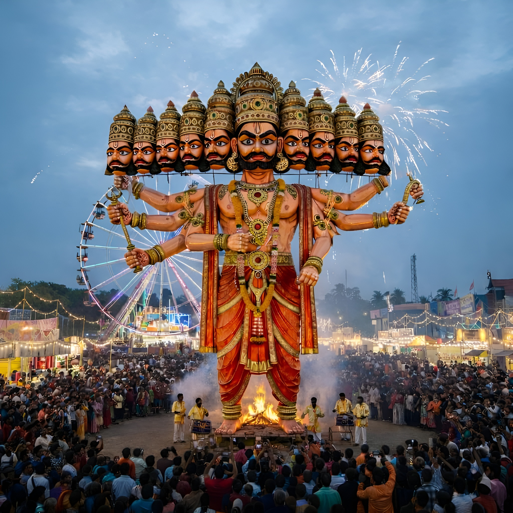
Cultural Significance
Dussehra reinforces moral values and the importance of truth, courage, and justice. It reminds people that arrogance and wrongdoing eventually lead to downfall.
The festival encourages self-reflection — burning the “inner Ravana” such as anger, ego, greed, and jealousy.
Dussehra is not just a celebration of mythological victory — it is a reminder of ethical living.
Makar Sankranti
Festival of the Sun and New Beginnings
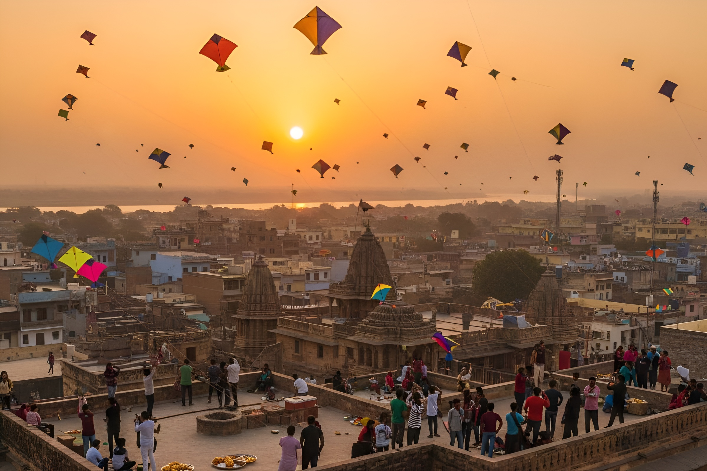
About Makar Sankranti
Makar Sankranti is a major Hindu festival celebrated across India, marking the transition of the Sun into the zodiac sign Capricorn (Makara). Unlike many Indian festivals that follow the lunar calendar, Makar Sankranti is based on the solar calendar and usually falls on January 14th every year.
The festival signifies the end of winter and the beginning of longer, warmer days. It is considered highly auspicious and symbolizes renewal, positivity, and fresh beginnings.
When it is celebrated:
Makar Sankranti is celebrated on January 14 every year.
Astronomical Significance
Makar Sankranti marks the Sun’s northward journey, known as Uttarayan. This transition is believed to bring prosperity, light, and spiritual growth.
The movement of the Sun into Capricorn holds special importance in Indian tradition, representing progress and enlightenment.
How It Is Celebrated
Celebrations vary across regions:
- In Gujarat, people fly colorful kites in a festival known as Uttarayan.
- In Punjab, it is celebrated as Lohri with bonfires and traditional dances.
- In Assam, it is known as Magh Bihu with feasts and cultural performances.
- In many parts of India, people take holy dips in rivers like the Ganga.
Traditional sweets made of sesame seeds (til) and jaggery are prepared and shared, symbolizing warmth and unity.
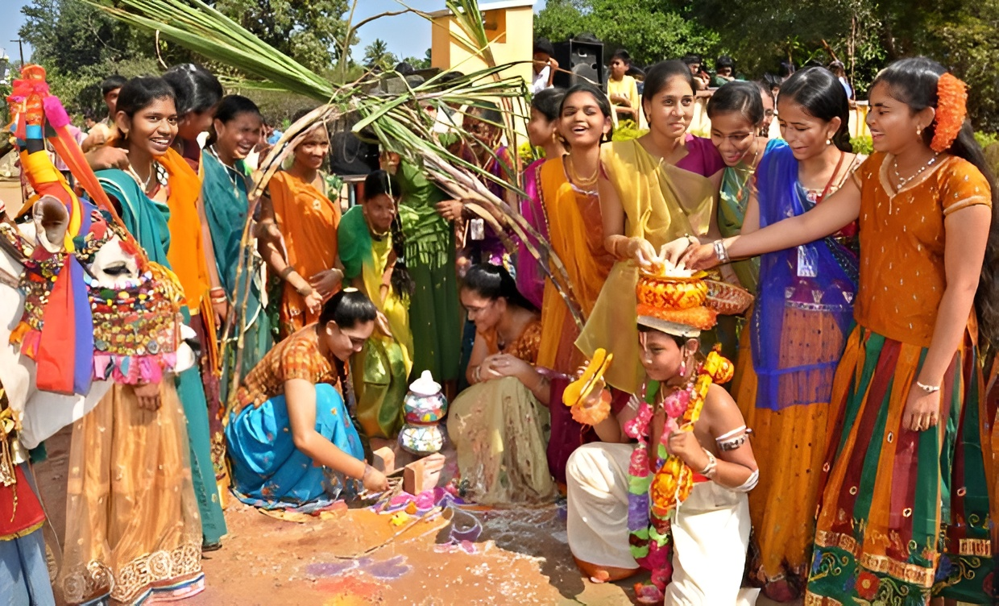
Cultural Significance
Makar Sankranti represents gratitude toward the Sun, nature, and agricultural prosperity. It emphasizes harmony between humans and the natural world.
The festival also symbolizes leaving behind negativity and embracing new opportunities with hope and determination.